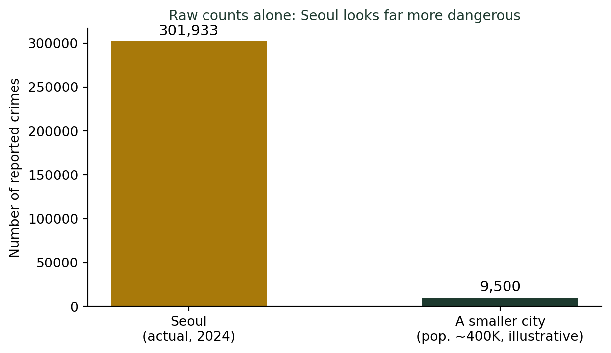
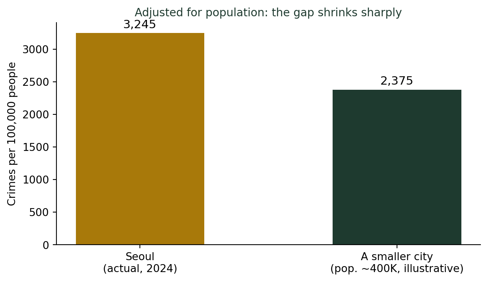

(비율과 백분율의 함정) 인구 1만 명당 범죄율을 사용하는 이유
통계기초
기술통계
서울의 범죄 발생 건수는 전국 1위다. 그런데 정부가 발표한 안전지수에서는 세종·전남이 가장 안전하다고 나온다. 두 통계는 왜 이렇게 다른 결론을 낼까?
수업 시간마다 던지는 질문
매 학기 통계학 개론 첫 시간이면, 나는 학생들에게 같은 질문을 던진다.
“서울과 세종, 어디가 더 위험할까요?”
거의 모든 학생이 주저 없이 서울이라 답한다. 근거도 바로 댄다. “범죄 건수가 압도적으로 많잖아요.” 틀린 말은 아니다. 2024년 경찰청 통계를 보면 서울에서 발생한 범죄는 30만 건을 넘는다(301,933건, 전국 1위). 그런데 2026년 1월, 행정안전부가 발표한 지역안전지수에서 범죄 분야 전국 1등급(가장 안전한 지역)으로 꼽힌 곳은 다름 아닌 세종과 전남이었다.
같은 나라, 비슷한 시기의 통계인데 왜 정반대의 결론이 나올까? 매년 이 질문 앞에서 학생들은 잠깐 말을 잃는다.
숫자만 비교하면 반쪽짜리 정보다
답은 간단하다. “범죄 건수”라는 숫자에는 분모가 빠져 있다. 서울 인구는 약 930만 명, 세종 인구는 약 40만 명이다. 인구가 23배나 차이 나는 두 지역의 범죄 “건수”를 그대로 비교하는 것은, 애초에 공정한 비교가 아니다.
학생들이 처음 이 그래프를 보면 다들 고개를 끄덕인다. “역시 서울이 위험하네요.” 그런데 여기서 인구를 함께 보여주면 반응이 달라진다.
인구로 나누면 그림이 달라진다
같은 기준으로 비교하려면, 두 지역 모두 “인구 10만 명당 몇 건”인지로 환산해야 한다.
\[\text{인구 10만 명당 발생률} = \frac{\text{범죄 건수}}{\text{인구 수}} \times 100{,}000\]
서울의 실제 수치로 계산해 보면:
\[\frac{301{,}933}{9{,}305{,}678} \times 100{,}000 \approx 3{,}245\text{건}\]

두 그래프를 나란히 보여주면, 강의실 반응이 늘 재미있다. 첫 번째 그래프에서 “역시 서울”이라 했던 학생들이, 두 번째 그래프 앞에서는 “어? 별 차이 없네요?”라고 말한다. 숫자를 바꾼 것이 아니라, 분모를 더했을 뿐인데도 그림이 완전히 달라진다.
실제로 정부는 이렇게 비교한다
행정안전부가 매년 발표하는 지역안전지수는 단순 발생 건수가 아니라, 인구를 비롯한 여러 요인으로 보정한 지표를 사용한다. 2026년 1월 발표에서 범죄 분야 1등급(세종·전남)과 5등급 지역의 순위가, 단순 범죄 “건수” 순위와는 다르게 나타난 것도 같은 이유다. 대도시일수록 분자(범죄 건수)와 함께 분모(인구)도 크다는 사실을, 지수를 설계할 때부터 반영하는 것이다.
더 깊이: 비율이라는 개념의 뿌리
“건수를 인구로 나눈다”는 이 단순한 계산은 사실 확률론에서 가장 기본이 되는 개념과 맞닿아 있다. 강의노트 〈수리 통계 1. 확률 — 상대 빈도〉에서는 사건이 일어난 횟수를 전체 시행 횟수로 나눈 상대빈도가 어떻게 확률의 정의로 이어지는지를 다룬다. 범죄율이든 동전 던지기든, “몇 번 중 몇 번”이라는 비율로 바꿔야 서로 다른 크기의 대상을 공정하게 비교할 수 있다는 원리는 동일하다.
결론: 분모를 묻는 습관
비율 통계를 읽는 법
- “OO 건수가 가장 많다”는 말을 들으면, “그래서 인구(또는 전체 대상)는 몇 명인가?”를 함께 묻는다.
- 지역·집단 간 비교에는 항상 같은 분모(인구 10만 명당, 1만 명당 등)를 쓴 값을 사용한다.
- 분모가 큰 대상(대도시, 큰 조직)은 분자도 자연히 커진다는 점을 감안한다.
- 공식 지표(안전지수, 유병률 등)는 대개 이미 분모를 반영해 만들어졌다는 것을 기억하고, 원자료의 “건수”만 따로 인용한 기사는 한 번 더 의심한다.
학생들에게 나는 늘 같은 말로 이 수업을 마무리한다. “숫자가 크다고 겁먹지 마세요. 먼저 물어야 할 건 하나뿐입니다 — 몇 명 중에서요?”